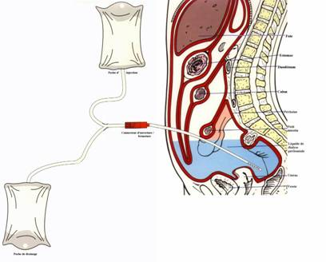
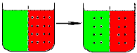
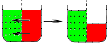
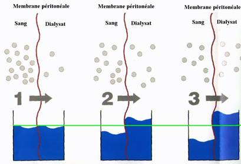

La dialyse peritoneale
Definition
La dialyse
peritoneale est l'epuration du sang en utilisant le peritoine comme
filtre. Elle consiste en l'elimination des dechets au travers de la
membrane peritoneale entre la circulation sanguine de la sereuse
peritoneale et un liquide introduit dans la cavite peritoneale, le
dialysat.

Principes
de la dialyse peritoneale
Mise en
place d'un catheter dans la cavite peritoneale : dans le cul-de-sac de
Douglas. Une partie du catheter est a l'exterieur oe sera introduit le
dialysat.
Au niveau de la membrane peritoneale, 2 phenomenes :
La diffusion
La
diffusion est le transport passif de solutes a travers la membrane
separant les vaisseaux sanguin et le dialysat, qui permet e
l'eau et aux molecules de faibles poids moleculaires de passer dans les
2 sens, en fonction des differences de concentrations de part et
d'autres de cette membrane.

L'osmose
Le
dialysat a des concentrations en sucre et le sucre a le pouvoir
d'attirer l'eau, donc d'attirer le sang vers le dialysat.

Association des phenomenes physique dans
la dialyse peritoneale

Indications
- Insuffisance renale.
- Glomerulopathie.
- Nephropathie.
- Personne autonome et pouvant rester e
domicile : personne egee, enfant, adulte ayant une activite
professionnelle.
- Pathologies vasculaires et cardiaques.
- Diabetiques.
Contre-indications
- Paroi abdominale de mauvais etat.
- Patient anurique.
Materiel
- Dialysat : systeme de double poche : une
poche pleine et une poche vide dont les tubulures se rejoignent en Y.
- Rechauffeur de poche.
- Balance.
- Pied a perfusion.
- Antiseptique.
- Compresses steriles.
- Bouchon sterile.
- 2 clamps.
- Sparadrap.
- 4 bavettes.
- Sac a elimination des dechets.
- Conteneur a elimination des substances
contaminees.
- Desinfectant de surface et chiffonnette.
- Necessaire a l"hygiene des mains.
Realisation
du soin
Installation
- Prevenir le patient.
- Verifier la prescription medicale ou le
protocole de dialyse pour ce patient.
- Installer le materiel apres verification
des dates de peremptions.
- Installation sur une surface propre et
desinfectee au prealable.
- Installer les poubelles de tri des
dechets au pied du lit du patient.
- Releve les parametres : tension
arterielle, pulsations.
- Installer le patient en decubitus dorsal
ou en position demi-assise et lui mettre une bavette.
- Mettre une bavette.
- Effectuer un lavage simple des mains ou
effectuer un traitement hygienique des mains par frictions avec une
solution hydro-alcoolique : hygiene
des mains.
- Ouvrir aseptiquement les paquets de
compresses et les imbiber avec l’antiseptique dermique.
Drainage du dialysat
- Verifier la date de peremption de la
poche de dialysat, sa concentration, son volume, sa limpidite, son
integralite et sa temperature (37e).
- Suspendre la poche de dialysat au pied e
perfusion.
- Clamper la tubulure allant vers le
patient.
- Effectuer un lavage antiseptique des
mains ou
effectuer un traitement hygienique des mains par frictions avec une
solution hydro-alcoolique : hygiene
des mains.
- Saisir l'extremite de la tubulure
d'extension du catheter avec une compresse sterile imbibee
d'antiseptique, clamper la voie et eter le bouchon.
- Adapter l'extremite de la tubulure
d'extension du catheter a la tubulure de la poche de dialysat en
manipulant avec des compresses steriles imbibees d'antiseptique.
- Mettre la poche vide de drainage en
declive et declamper la tubulure d'extension du catheter.
- Eliminer les dechets et desinfecter le
materiel utilise ainsi que le plan de travail.
- Effectuer un lavage simple des mains ou
effectuer un traitement hygienique des mains par frictions avec une
solution hydro-alcoolique : hygiene
des mains.
Injection du dialysat
- Effectuer un lavage simple des mains ou
effectuer un traitement hygienique des mains par frictions avec une
solution hydro-alcoolique : hygiene
des mains.
- A la fin de la vidange, clamper la voie
du Y allant vers le patient : extremite de la tubulure d'extension du
catheter.
- Ouvrir la voie de la poche du dialysat
pour purger l'air contenu dans la tubulure dans la poche de recueil.
- Ouvrir la voie allant du dialysat vers
le patient pour injecter la solution dans le peritoine.
- Eliminer les dechets et desinfecter le
materiel utilise ainsi que le plan de travail.
- Effectuer un lavage simple des mains ou
effectuer un traitement hygienique des mains par frictions avec une
solution hydro-alcoolique : hygiene
des mains.
Fin du cycle de dialyse
- Effectuer un lavage simple des mains ou
effectuer un traitement hygienique des mains par frictions avec une
solution hydro-alcoolique : hygiene
des mains.
- Ouvrir aseptiquement les paquets de
compresses et les imbiber avec l’antiseptique dermique.
- A la fin de l'injection, clamper la voie
Y des poches ainsi que l'extremite de la tubulure d'extension du
catheter.
- Effectuer un lavage antiseptique des
mains ou
effectuer un traitement hygienique des mains par frictions avec une
solution hydro-alcoolique : hygiene
des mains.
- Deconnecter le systeme de poches et
mettre un bouchon sterile a l'extremite de la tubulure d'extension du
catheter. Fixer l'extremite sur l'abdomen du patient.
- Effectuer un lavage simple des mains ou
effectuer un traitement hygienique des mains par frictions avec une
solution hydro-alcoolique : hygiene
des mains.
- Reinstaller le patient.
- Peser la poche de recueil du dialysat.
- Jeter sans la vider la poche dans un
conteneur a elimination des substances contaminees.
- Eliminer les dechets et desinfecter le
materiel utilise ainsi que le plan de travail.
- Effectuer un lavage simple des mains ou
effectuer un traitement hygienique des mains par frictions avec une
solution hydro-alcoolique : hygiene
des mains.
- Mettre une nouvelle poche sur le
rechauffeur.
- Transmission : quantite de dialysat
injecte, quantite de dialysat recueilli, parametres physiologiques.
Risques
et complications
- Infection : peritonite.
- Denutrition : sensation de repletion
abdominale, diminution de l'appetit due a la surcharge en glucose.
- Douleur lors de l'injection du dialysat
: verifier la temperature : 37e.
- Mecanique : obstruction du catheter,
fuite du dialysat, deplacement du catheter.
- Biologique : hyperglycemie,
hypertriglyceridemie.
Surveillances
et evaluations
- Poids du patient.
- Quantite et qualite du dialysat
recueilli.
- Diurese.
- Parametres physiologiques : pression
arterielle, pulsations, temperature.
- Douleurs abdominales.
- Cahier de suivi.